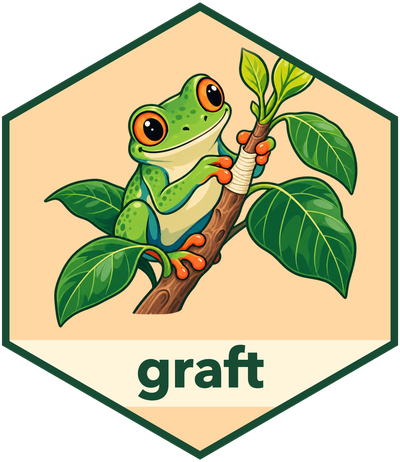

Govern knowledge changes
Source:vignettes/knowledge-change-control.Rmd
knowledge-change-control.RmdKnowledge change control is easier to reason about when there is one answer to “what was accepted?” In graft, immutable record revisions are that answer. Current records, search data, graph relationships, and the OKF working tree are derived views that can be rebuilt from the accepted ledger.
Every mutation follows the same sequence:
candidate records -> read-only plan -> review -> atomic commit -> revision historyThis separation makes the approval boundary visible and prevents validation, OKF import, or convenience functions from becoming alternate write paths.
The objects at the boundary
graft uses S7 selectively where an object carries durable invariants:
-
GraftSchemaowns a validated compiled domain contract and its digests. -
GraftProvenanceidentifies the producer event and replay boundary. -
GraftCommitPlancarries the candidate change set and commit preconditions. -
GraftStoreowns store identity and private connection state.
Domain records remain ordinary data frames. Retrieval results remain ordinary data frames or lists. graft does not create an S7 class for every contract class.
library(graft)
schema <- graft_schema(system.file(
"extdata",
"team-directory.data-dict.json",
package = "graft",
mustWork = TRUE
))
store <- graft_open(schema, ":memory:", okf = "disabled")Build a reviewable plan
Provenance and records are separate inputs so the candidate’s origin cannot be confused with its domain content.
provenance <- graft_provenance(
producer = "directory-import",
run_id = "run-42",
idempotency_key = "directory-2026-08-03"
)
records <- list(
organization = data.frame(
id = "org:daily-planet",
name = "Daily Planet"
),
person = data.frame(
id = "person:lois-lane",
full_name = "Lois Lane",
job_title = "Reporter"
),
employment = data.frame(
id = "employment:lois-lane:daily-planet",
person_id = "person:lois-lane",
organization_id = "org:daily-planet"
)
)
plan <- graft_plan(store, records, provenance)Planning is deterministic for the same contract, store snapshot, records, and provenance. It performs the work needed for an informed review:
- normalize values and validate the compiled contract shapes;
- resolve stable record identity;
- validate references across the complete candidate set;
- compare candidates with current accepted heads;
- classify each candidate as an insert, update, or match;
- collect validation issues with source-row coordinates; and
- bind the plan to the store, schema, expected heads, and a plan digest.
No accepted record or batch metadata is written during this step.
plan@valid
plan@changes
plan@issuesA reviewer should examine the proposed dispositions and changed
fields, not only plan@valid. Valid means that the plan can
be committed; it does not mean that the proposed knowledge is
desirable.
Commit with optimistic preconditions
if (plan@valid) {
result <- graft_commit(store, plan)
}Immediately before mutation, graft rechecks the plan digest, store identity, store format, active schema digest, idempotency state, write capability, and expected record heads. If another accepted change made the plan stale, the commit fails and the caller must plan again against the new state.
The accepted changes, provenance, identity decisions, and observations commit together. A failure before transaction completion leaves no partially accepted change.
Recommitting the exact reviewed plan with its committed producer and idempotency key returns the original result without adding accepted metadata. Reusing that key for a different plan fails. This makes retry behavior explicit at the workflow boundary.
Use the convenience path deliberately
graft_ingest() plans and immediately commits when the
plan is valid:
convenience_result <- graft_ingest(
store,
list(
organization = data.frame(
id = "org:metropolis-university",
name = "Metropolis University"
)
),
graft_provenance(
producer = "directory-import",
idempotency_key = "directory-2026-08-03-university"
)
)
convenience_result$insertedIt is appropriate when the producing process is itself authorized to
accept the records and no person or host policy needs to inspect the
change set. Use graft_plan() and
graft_commit() separately whenever review matters.
Recover current and historical state
Current retrieval reads the head of the accepted revision chain:
graft_get(store, "person:lois-lane")Suppose a later source run changes the record:
update <- list(
person = data.frame(
id = "person:lois-lane",
full_name = "Lois Lane",
job_title = "Investigative editor"
)
)
update_plan <- graft_plan(
store,
update,
graft_provenance(
producer = "directory-import",
run_id = "run-43",
idempotency_key = "directory-2026-08-04"
)
)
update_plan@changes
graft_commit(store, update_plan)graft_history() returns immutable revisions in
deterministic newest-first order. Each row carries the accepted record
and the provenance needed to explain the change.
history <- graft_history(
store,
id = "person:lois-lane",
limit = 100
)
history[, c("batch_id", "changed_fields", "record")]An accepted batch ID or POSIXt value can select the
state at a commit boundary:
earlier <- graft_history(
store,
id = "person:lois-lane",
as_of = history$batch_id[[2]],
limit = 1
)
earlier$record[[1]]Commit order, not a record’s own timestamp, defines historical boundaries.
Verify derived state
Advanced integrity inspection is available as a bounded query:
graft_query(
store,
operation = "integrity",
request = list(projections = TRUE),
limit = 100
)The check verifies the authoritative revision chain and, when requested, the freshness of derived projections. A projection can be repaired from accepted revisions; it never becomes a second source of record content.
Evolve the contract explicitly
A domain contract can evolve, but contract evolution is not an in-place rewrite of accepted payloads. A new contract version must be registered, current revisions must be interpretable under it, and derived projections must be rebuilt. Historical revisions retain the exact schema digest under which they were accepted.
During v0.1 development, a breaking contract change means rebuilding a store from source records under the new contract. graft does not hide that change behind a force flag or an automatic transformation.
graft_close(store)